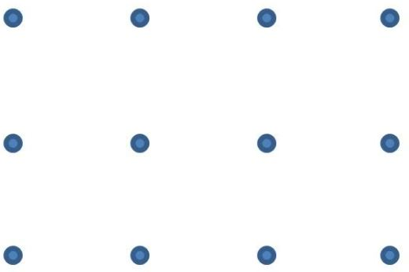
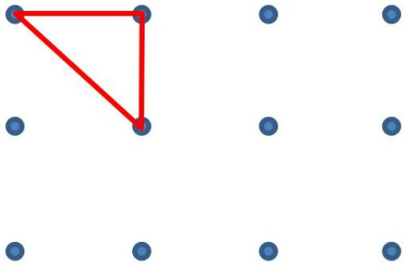
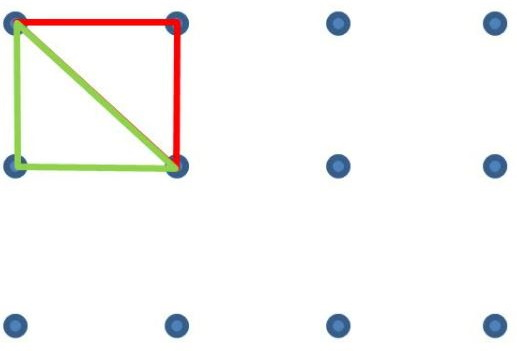
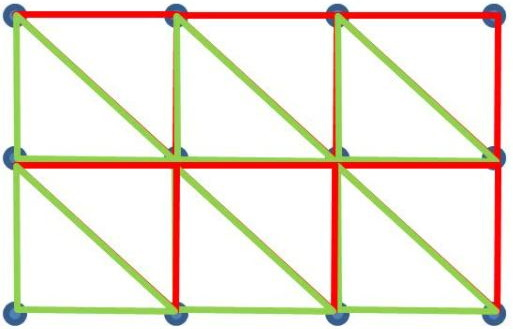

如果有些點組成了曲面，該如何繪製出這個曲面呢？最簡單的方式是在每個 (x, y, z) 處放上一個小方塊，例如：
resolution 決定了 x 與 z 的步進值，它的值越小，函式圖案就越細緻，只不過繪製的時間就會越久。
想要建立更細緻的模型，又想試著耗費相對少的成本，可以將這些點彼此組合為三角面，例如，你有以下的點：

那麼每個點往右下與往右各取一個點，就可以構成三角形：

然後，每個點往下與往右下各取一個點，也可以構成三角形：

接著就是使用迴圈處理完每個方格：

根據以上的說明，可以如下實作出 surface 函式：
來結合一下〈Perlin 雜訊〉，將雜訊值作為高度，就可以製作地形起伏效果：